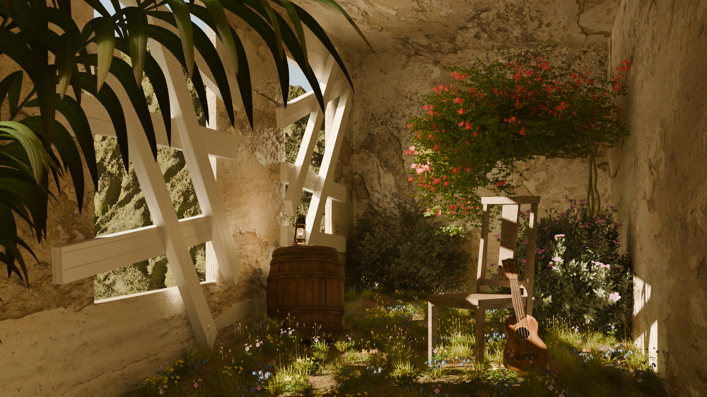

Intérieur abandonne
À l’aide du logiciel Blender, j’ai réalisé la scène d’un intérieur abandonné envahi par la végétation. C’était un projet assez long car j’ai dû travailler de nombreux détails : la lumière naturelle entrant par les fenêtres brisées, les textures abîmées des murs, ainsi que la végétation qui prend progressivement possession de la pièce. J’ai porté une attention particulière à l’ambiance lumineuse afin de créer un contraste entre l’aspect délabré de l’environnement et la douceur de la nature qui s’installe. Pour renforcer le réalisme, j’ai utilisé des textures pour les murs et le sol, ainsi que plusieurs systèmes de particules pour disperser les plantes et les fleurs de façon naturelle. Certains éléments du décor, comme le tonneau ou la guitare, m’ont permis d’ajouter une touche narrative : ils évoquent la présence passée de vie dans cet espace désormais désert. J’ai également travaillé le cadrage et la profondeur de champ pour guider le regard à travers la scène et mettre en valeur les zones éclairées. Ce projet m’a permis de progresser en shading, en gestion de la lumière et en composition, tout en explorant l’esthétique des lieux laissés à l’abandon.
